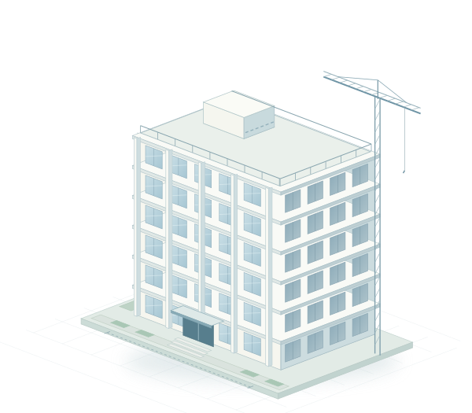

BUILDING PASSPORTدر حال ساخت
ساختمان بهشتیشفافیت، از پی تا بام.
اطلاعات ساختمان، عوامل طراحی و نظارت و موقعیت پروژه؛ همه در یک شناسنامه، همیشه در دسترس.
شناسه پروژهBS–1405–1184پروژه نمونه ۰۱

۶ طبقه۵ طبقه + همکف
مرحله اجرای اسکلت
SCHEMATIC / 01
تعداد طبقات
۶طبقه
۵ طبقه + همکف
سطح اشغال
۶۰درصد
۴۸۰ مترمربع
مساحت زمین
۸۰۰مترمربع
اطلاعات پروژه نمونه
عوامل پروژه
۱۶نقش تخصصی
طراحی، نظارت و اجرا
01
۱۶ نقش تخصصی
افراد پشت این ساختمان
عوامل طراحی، نظارت، اجرا و خدمات تخصصی پروژه
نتیجهای پیدا نشد
نام یا تخصص دیگری را جستجو کنید.
02
موقعیت نمونهموقعیت ساختمان
آدرس و دسترسی به محل پروژه
تهران، اوین
دانشگاه شهید بهشتی
تهران، میدان شهید شهریاری، بلوار دانشجو، دانشگاه شهید بهشتی
35.80235° N 51.39288° E
مسیریابی تا ساختمانبا دو انگشت نقشه را جابهجا کنید
ورود واحد کنترل نظارت
مشاهده گزارشهای ناظرین و مجری، نتایج آزمایشگاه و نامههای پروژه